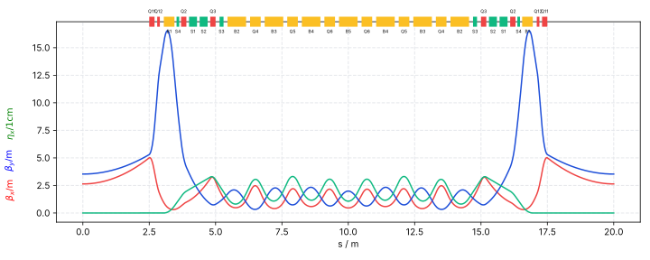

Summary of Hwang 4 Sexts
Data is generated by elegant
Info
| Title | Hwang 4 Sexts |
| File | hwang_4sexts.lte |
| Author | Ji-Gwang Hwang |
| Description |
Optical Functions Plot
Global Machine & Lattice Parameter
| Parameter | Value |
|---|---|
| Energy $E$ | 2.5 |
| Periodicity $N$ | nan |
| Cell length / m | nan |
| Cell Angle / rad | nan |
| Cell Angle / degree | nan |
| Circumference | nan |
| Parameter | Value |
|---|---|
| Natural Emittance / rad m | 8.75e-11 |
| Energy loss per turn $U_0$ / Mev | 0.0255 |
| Momentum compaction factor $\alpha_c$ | 0.000138 |
| $\alpha_{c2}$ | 0.000956 |
| $J_{\delta}$ | 0.226 |
| $\tau_{\delta}$ | 0.0578 |
Detailed Lattice Parameter
| Parameter | Value |
|---|---|
| $Q_x$ | 2.84 |
| $dnux/dp$ | -3.71 |
| $dnux/dp 2$ | 2.66 |
| $dnux/dp 3$ | -127 |
| max($\beta_x$) | 5.02 |
| min($\beta_x$) | 0.307 |
| mean($\beta_x$) | 1.91 |
| max($\eta_x$) | 0.0331 |
| $J_x$ | 2.77 |
| $\tau_x$ | 0.00472 |
| Parameter | Value |
|---|---|
| $Q_y$ | 1.98 |
| $dnuy/dp$ | -4.28 |
| $dnuy/dp 2$ | -0.32 |
| $dnuy/dp 3$ | -272 |
| max($\beta_y$) | 16.5 |
| min($\beta_y$) | 0.329 |
| mean($\beta_y$) | 3.44 |
| max($\eta_y$) | 0 |
| $J_y$ | 1 |
| $\tau_y$ | 0.0131 |